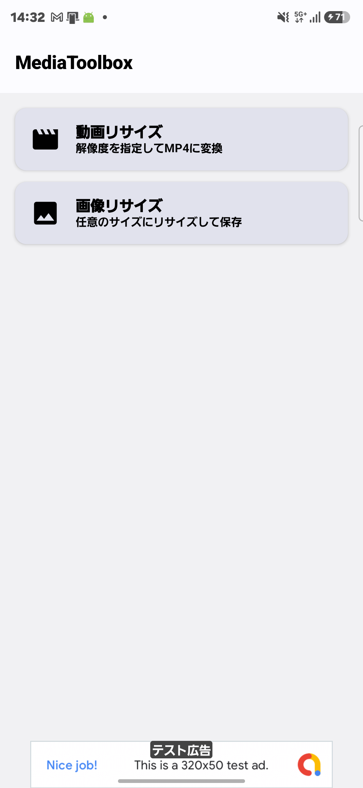
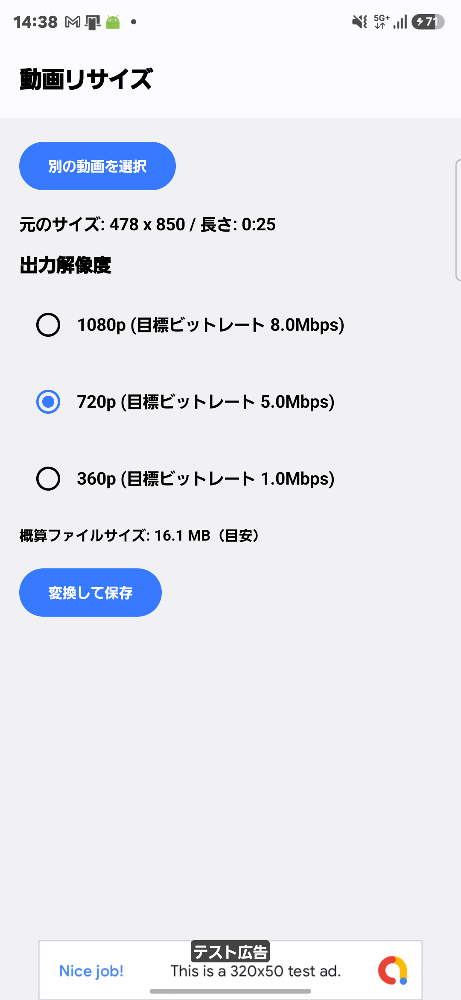
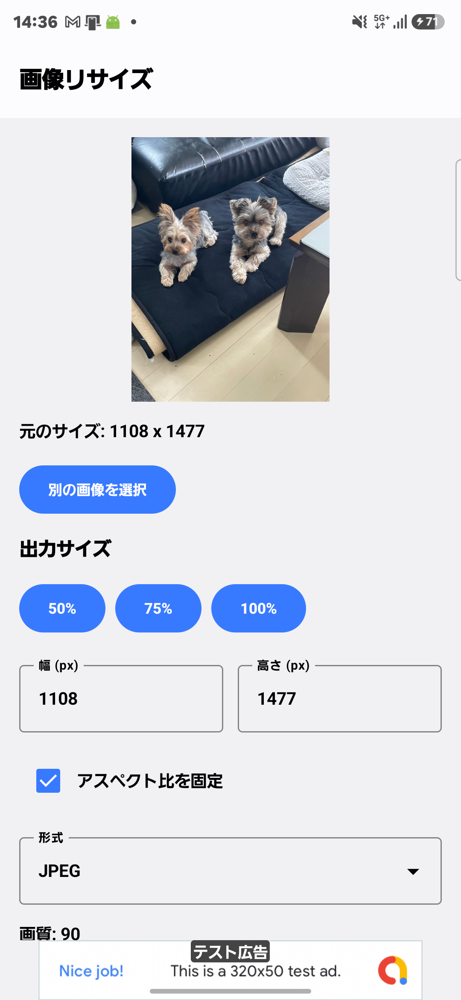

MediaToolbox
動画・画像を指定サイズにリサイズ。保存前に概算ファイルサイズも確認できます。
- 動画を1080p/720p/360pなど好きな解像度でMP4形式にリサイズ・保存
- 画像の幅・高さを自由に指定してリサイズ（アスペクト比固定にも対応）
- 変換前に概算ファイルサイズを表示、処理中は進捗もひと目で確認



※ 現在テスト公開準備中のため、公開までリンク先が表示されない場合があります。
実業家 ・ アプリケーション開発者 ・ ビジネスコンサルタント
現場で培った顧客心理分析力とテクノロジーへの知見を融合し、
日常の不便を解消する「ありそうでなかった」アプリケーションを開発しています。
北海道を拠点に活動する実業家／アプリケーション開発者／ビジネスコンサルタント。 通信インフラ領域における光回線やビジネスフォンの現場営業、携帯キャリアショップの統括マネジメントに加え、 保険領域において高度なコンサルティング営業を経験。かんぽ生命での個人向け生命保険・第三分野（医療・がん等）から、 東京海上日動の自動車保険をはじめとする損害保険、さらには法人向け生命保険のソリューション提案に至るまで、 多岐にわたる金融・保険商品の販売現場で顧客心理の分析と成約ノウハウを体系化してきた。
現場最前線で培った「顧客の本質的な課題抽出能力」と、100台以上の自作PC構築やガジェット検証で培った ハード・ソフト双方の知見を融合し、誰もが恩恵を受けられる、実用性と独自性を兼ね備えたアプリケーションを 企画・開発・公開しています。
動画・画像を指定サイズにリサイズ。保存前に概算ファイルサイズも確認できます。



※ 現在テスト公開準備中のため、公開までリンク先が表示されない場合があります。